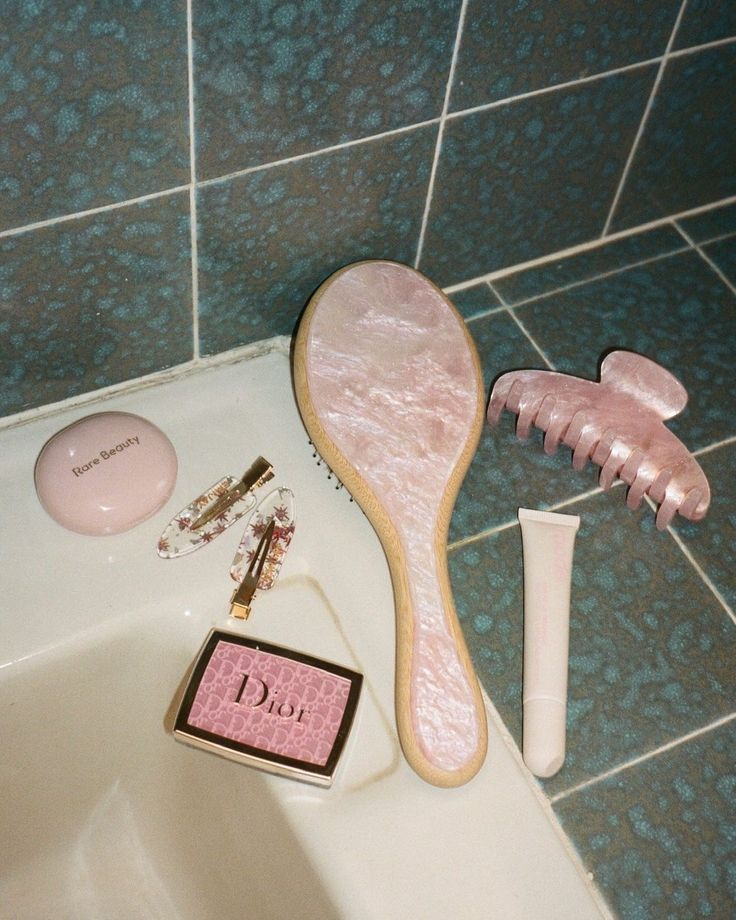

Have you ever struggled to find a specific makeup product in the thousands of options? Welcome to Make It Up! On this website, you can find the perfect makeup product(s) for you. Simply answer three questions about your skin type, preferred makeup style, and budget, and we will take care of the rest.
Many factors play a part in choosing a specific makeup product for a specific person. Everyone has a different skin type, makeup style, and budget, so not every product is going to match someone's necessities. Some products are going to perform better on certain skin types. In addition, not all products are created equal. Some are for people who are looking to do a more professional makeup look, and others are more for everyday use. There are also price variations. Some products are more high-end, and some others are cheaper. That is why knowing where you stand on each of these categories is crucial to choosing the right products for you.

Susana:As someone who wears makeup every day, I run out of products fairly fast, and I constantly need to buy restocks. I am a woman in my 40s, so the products I use must be very specific. I am always on the hunt for new products that might be better than the previous ones I’ve used. A website like Make It Up sounds perfect for finding better product recommendations according to my skin type.